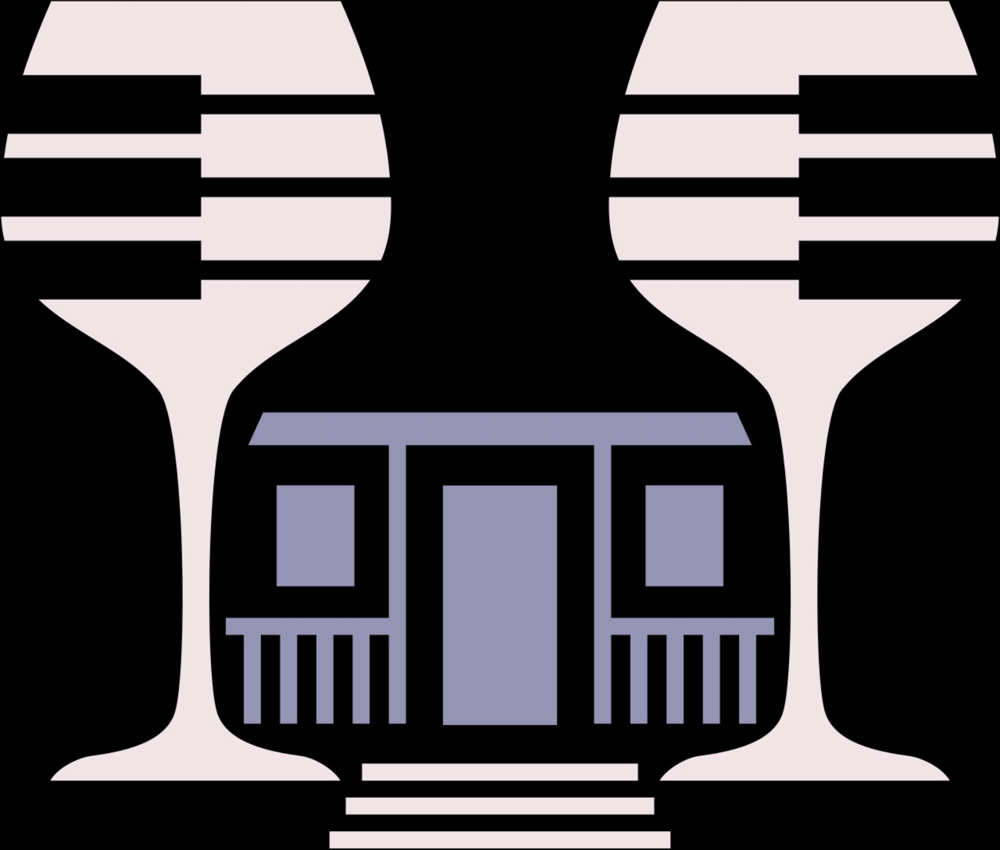

BITEtheABYSS TAROT
PRIVATE READING
A quiet moment for yourself
把問題留在心裡，
讓牌慢慢展開。
選擇牌陣與抽牌規則。問題留白時，抽牌資料僅留在你的瀏覽器中。
✦
01
選擇牌陣
1 張
單張指引
此刻最需要看見的訊息
三張時間流
過去・現在・未來
關係牌陣
雙方心態與關係走向
選擇牌陣
兩條路徑與核心建議
塞爾特十字
完整梳理複雜情境
身心靈
身體・思緒・內在需要
四元素
行動・情感・思考・現實
創作指引
靈感、阻力與下一步
＋
其他牌陣
關係、選擇與完整占卜
用一張牌聚焦當下，適合清楚而單純的提問。
02
寫下問題
可留白
你的問題
問題會顯示在結果頁
0 / 160
03
設定抽牌規則
僅使用正位
僅使用正位
只使用大阿卡納
只使用大阿卡納，共 24 張
開始洗牌
✦